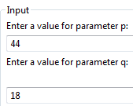
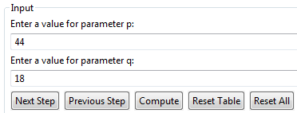
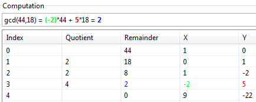
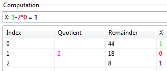
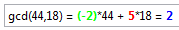

This visualization consists of two components and is made to illustrate the Reciprocal Subtraction (Euclidean Algorithm) and the Extended Euclidean Algorithm.
In the input fields for p and q two positive integers can be inserted, whose greatest common divisor (gcd) will be calculated.
After that you can control the plug-in with the 4 buttons which are shown below:
In the section Computation you can see a partially or a completely executed calculation, depending on which type of calculation you chose.
You can see an example of a complete calculation below: (green squares => larger number p, red squares => smaller number q, blue squares => remainder)

The control of this plug-in part is similar to the first one: You can enter the positive integers p and q with the respective input fields. Furthermore, you can use the buttons to calculate the values for x and y and to display them in the table below (partly / completely):
You can see a completely executed calculation below:
The table is divided in 5 columns: Index, Quotient, Remainder, x and y. With the first two lines the table is initialized (remainder0 = p, remainder1 = q).
If you choose the partially executed calculation, the current step is highlighted in the text field as well as in the table:
After the calculation is finished, the gcd, x and y are displayed above the table: (x=>green, y=>red, gcd(p,q)=>blue)
After passing the calculation it is additionally possible to export the table as .tex or .csv via the dropdown menu in the upper-right plug-in-corner.